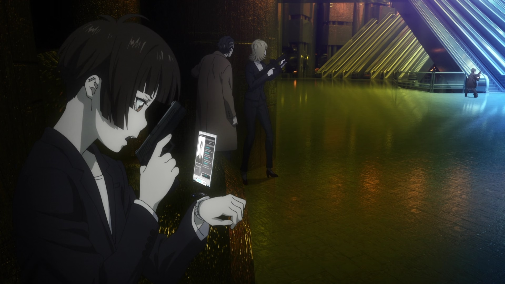

The release of "Psycho-Pass - Providence" in 2023 was my excuse to finally watch the franchise collecting dust on my shelf. And I'm glad I did. While the franchise on a whole owes a lot to Production I.G.'s other hit in "Ghost in the Shell," I feel the output of "Psycho-Pass" has generally been more consistent. While this movie, set between Season 2 and Season 3, is meant to be the final outing for the series, I'd be surprised if the studio didn't continue, as the world is still vast and an infintie number of stories could be told, and a bad one hasn't soured the franchise yet. I was pleasantly impressed to see "Providence" be the "Ghost in the Shell 2 - Innocence" to the "Psycho-Pass" franchise. This can be seen the golden-orange colour-palette from the lighting. It can be seen in the higher-tier of animation and rendering, the best the franchise has looked to date, and the heavier use of CGI that doesn't overtake the 2D characters. It can be seen in the story, where Inspector Akane and her team investigate a new terrorist group lead through a cyber-brain flaw that makes them think they hear "God" and do his bidding, when it's really a single man with grand ambitions against the Sybil System. It can be seen in antagonists that are multi-dimensional and not clearly on one side or another. It's all very "Ghost in the Shell"-esque, and specifically Mamoru Oshii-like, in a great way, while still mostly in line with the "Psycho-Pass" franchise and the A.I. system that can judge a criminal before they commit a crime. Unlike prior stories, there's a bigger emphasis here on bureaucracy in the world of Sybil. That sounds boring, but I found it fascinating, and was happy to see it as a bigger aspect to the story this time. Beyond that, there are some big franchise developments in this movie's story. Key characters die. Through a new loop-hole, fan-favourite Shinya Kogami returns, seemingly for good this time, and the romantic tension between him and Inspector Akane is palpable in a juicy-fanservice way. Nitpicks in the plot are minor (why is the cast surprised when their Dominator weapons are unable to judge a character, when this is the main plot device in every story?). I was mostly interested in how the film would end, having seen spoilers for why Season 3 follows a completely new cast, and while it feels shoehorned into the final minutes of the movie, it's satisfyingly shocking. It's the big move, the "check-mate" play that attempts to end the stalemate Akane and the Sybil System had since Season 1, and is the type of development the series desparately needed. It's still true that no one questions Akane's clear crime-coefficient; is she asymptomatic like some criminals they've caught, or just a pure person? The answer might be clear, but the more frustrating point is why no other characters have questioned it yet? As mentioned, the production quality is truly theatrical-level, and the best the franchise has looked. Music and sound is still a highlight. Funimation (aka Crunchyroll) provided the English dub, which is as good and solid as it's always been. Curiously, a theatrical relase in Canada, gave way more screenings to the subtitled-version instead of the dubbed, although it shouldn't be surprising that die-hard fans that want to see an anime early would insist on the original Japanese. Also curiously, the age rating in Canada was PG, which made me laugh: while "Providence" does tone down the violence a bit (the worst of it happens offscreen), a live-action version would still easily be rated PG-13, and the gory Season 1 and 2 would have been rated R at a minimum. That pretty well covers it. "Psycho-Pass - Providence" is an excellent showing for the franchise, and for both the story-developments and visual quality, it's essential for fans. Watching Season 1 first is necessary, with Season 2, "The Movie," and Season 3 being less essential but encouraged to get the most out of the new film. While the franchise never really surpassed it's big brother in "Ghost in the Shell," the consistency of good-quality stories (compared to post-"Stand Alone Complex" GITS) makes it easier to recommend overall as the anime standard for sci-fi enthusiasts.
- "Ani" More reviews can be found at : https://2danicritic.github.io/ Previous review: review_Psychic_School_Wars Next review: review_Psycho-Pass_-_Season_1